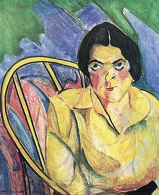

A Boba
Artista: Anita Malfatti
Ano: 1915 - 1916
Descrição: A obra retrata uma mulher com traços angulosos e assimétricos, deformados pelas pinceladas fortes e cores vibrantes, em um fundo abstrato. Utilizando elementos cubistas e futuristas, Malfatti rompe com o ideal clássico da beleza, apresentando uma figura expressiva e despojada